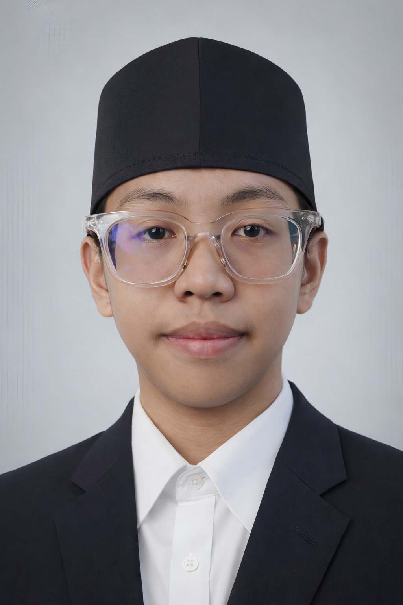

Double Degree Student in Islamic Education and Management
Universitas Islam Negeri Sunan Kudus & Universitas Terbuka
Community Builder | Academic Writer | Education Enthusiast
I am a double degree student studying Islamic Education at Universitas Islam Negeri Sunan Kudus and Management at Universitas Terbuka. My academic interests focus on educational development, academic literacy, and the role of digital technology in supporting collaborative learning communities among students.
My academic journey is driven by a strong curiosity about how knowledge, ethical values, and technological innovation interact in shaping meaningful educational environments. I am particularly interested in exploring how educational institutions can become spaces not only for knowledge transmission but also for critical thinking, ethical awareness, and collaborative problem solving.
Through research activities, academic writing, and community-based initiatives, I actively create spaces where students can exchange ideas, discuss contemporary issues, and engage in collaborative learning. I believe that universities should function as dynamic intellectual ecosystems where technology, knowledge, and community engagement work together to support student development.
I am also interested in global student initiatives that promote technology-driven learning and knowledge sharing, such as programs inspired by the Google Student Ambassador ecosystem, which emphasize student leadership, digital literacy, and collaborative innovation.My academic journey is shaped by a strong curiosity about the role of education in shaping individuals, communities, and social institutions. As a double degree student in Islamic Education and Management, I explore how educational philosophy, ethical traditions, and leadership practices intersect within contemporary educational contexts.
Through engagement with academic literature and conceptual discussions, I examine how educational ideas evolve within cultural and intellectual traditions. In particular, I am interested in how Islamic educational thought can contribute to holistic educational approaches that integrate intellectual development, moral awareness, and social responsibility.In addition to theoretical inquiry, I am also interested in the role of digital technology in expanding access to knowledge and supporting collaborative learning communities. I believe that universities should function not only as institutions of knowledge transmission but also as spaces where students actively exchange ideas, build intellectual networks, and engage in meaningful dialogue.
Beyond formal academic study, I participate in intellectual discussions and collaborative learning initiatives with fellow students. These activities provide opportunities to explore research ideas, exchange perspectives, and cultivate academic communities that extend beyond the classroom.
My mission is to contribute to the development of intellectually vibrant learning communities where students are encouraged to exchange ideas, cultivate critical thinking, and engage in meaningful academic dialogue. Through academic writing, research initiatives, and collaborative student activities, I seek to promote academic literacy and encourage students to explore the relationship between education, technology, and emerging innovations such as Artificial Intelligence (AI). I am particularly interested in initiatives that support student leadership, digital literacy, and technology-driven learning environments within universities.
My vision is to contribute to educational ecosystems where knowledge creation, collaborative learning, and ethical values are integrated within academic communities. I aspire to support initiatives that strengthen intellectual exchange, encourage interdisciplinary perspectives, and expand access to knowledge through digital platforms and emerging technologies such as Artificial Intelligence. Programs such as the Google Student Ambassador inspire student-driven communities that promote technological curiosity, knowledge sharing, and collaborative academic engagement within universities.
Undergraduate Student in Islamic Education at UIN Sunan Kudus
My academic training in Islamic Education provides a strong foundation in Islamic educational philosophy, pedagogical theory, and the intellectual traditions of Islamic scholarship. Through this field, I explore how educational values, ethical principles, and knowledge traditions shape learning processes in contemporary society.
My academic work particularly focuses on the intersection of education, digital transformation, and human development. Through several scholarly publications, I have examined issues such as digital literacy in education, the role of technology in transforming learning environments, and the ethical implications of artificial intelligence in cross-cultural counseling contexts.
These studies reflect my broader interest in understanding how technological change reshapes educational practices while maintaining ethical responsibility and human-centered values in educational systems.
Undergraduate Student in Management at Universitas Terbuka
In parallel with my studies in Islamic Education, I pursue a degree in Management to develop competencies in organizational leadership, strategic thinking, and institutional development. This academic background allows me to analyze how organizations adapt to technological innovation and digital transformation.
My research in this field explores topics related to digital human resource management, employee engagement, and psychological well-being in modern organizations. By integrating insights from management studies with educational perspectives, I seek to understand how institutions can effectively navigate digital change while maintaining human well-being and organizational sustainability.
Jurnal Malikussaleh Mengabdi
Volume 4 Number 2 (2025) – SINTA 4
This article examines strategies for empowering teachers to improve digital literacy in contemporary learning environments.
Journal of Economic and Business Innovation
Volume 1 Number 1 (2026)
CITA Insight: Journal of Counseling and Educational Dynamic
Volume 1 Number 1 (2026)
Recht: Journal of Legal Studies Volume 1 Number 1 (2026)
My research interests focus on the intersection of education, digital transformation, and technological innovation in contemporary society. I am particularly interested in Islamic education and character development, especially how ethical and philosophical traditions can contribute to holistic learning environments. Another area of interest involves digital transformation in education, including the development of digital literacy, the use of Artificial Intelligence in learning and counseling contexts, and the impact of educational technology on collaborative knowledge sharing among students. I am also interested in organizational and institutional transformation in the digital era, particularly the relationship between digital management systems, employee engagement, and psychological well-being. These interests align with initiatives that encourage student leadership, digital innovation, and knowledge-sharing communities within universities, including programs such as the Google Student Ambassador.
My academic journey is centered on the exploration of education, knowledge development, and intellectual collaboration. Through academic writing, literature-based research, and participation in scholarly discussions, I seek to understand how education can foster critical thinking, ethical awareness, and meaningful learning experiences. I am particularly interested in the role of education in shaping individuals who are capable of engaging thoughtfully with social issues and contributing constructively to their communities.
In addition to academic exploration, I view education as a collaborative process that grows through dialogue, reflection, and shared learning. By engaging with academic literature, participating in intellectual discussions, and producing scholarly writing, I aim to contribute to a learning environment that values curiosity, thoughtful inquiry, and the responsible use of knowledge.
Leadership within student communities requires the ability to create spaces where ideas can be exchanged openly and constructively. I believe that effective leadership is not only about guiding others but also about encouraging participation, building trust, and facilitating meaningful collaboration among students.
Through community engagement, I strive to support environments where students feel encouraged to share perspectives, ask questions, and explore new ideas together. By fostering collaborative learning initiatives and intellectual discussions, student communities can become spaces that nurture curiosity, creativity, and collective growth.
I am particularly interested in initiatives that bring together education, collaboration, and digital platforms to support learning communities. Through these efforts, students can develop both academic confidence and a sense of shared responsibility for knowledge development.
Knowledge sharing plays a fundamental role in the development of academic communities. I believe that knowledge should not remain limited to individual learning but should circulate through discussion, collaboration, and collective exploration.
Through academic writing, discussion forums, and digital platforms, knowledge can be shared in ways that allow more students to access ideas, perspectives, and educational resources. When students actively exchange knowledge and support each other's learning processes, academic communities become more dynamic and intellectually engaging.
Encouraging knowledge sharing also helps students develop confidence in expressing ideas, analyzing information critically, and engaging in constructive dialogue. These skills are essential not only for academic growth but also for building collaborative and innovative communities.
Digital technology has become an important component of contemporary learning environments. I actively use digital tools, academic databases, and collaborative platforms to organize research, explore academic resources, and support knowledge sharing.
Digital platforms allow students to access information more efficiently, connect with wider learning communities, and participate in collaborative discussions beyond traditional classroom settings. I am particularly interested in exploring how digital tools can enhance academic collaboration, support knowledge accessibility, and encourage innovative approaches to learning.
By integrating digital technologies into academic activities, students can develop both digital literacy and collaborative learning skills that are increasingly important in today's knowledge-driven world.
I believe that education should cultivate curiosity, intellectual responsibility, and ethical awareness. Learning is not merely about accumulating information but about developing the ability to question assumptions, analyze ideas critically, and engage thoughtfully with complex issues.
Education becomes meaningful when students are encouraged to explore knowledge actively, participate in discussions, and reflect on the broader implications of what they learn. Through this process, education can empower individuals to become thoughtful learners, responsible citizens, and contributors to positive social change.
In the future, I hope to contribute to initiatives that integrate education, technology, and community engagement. I am particularly interested in supporting student communities that promote digital literacy, collaborative learning, and responsible technology use.
By encouraging students to explore digital tools for learning, communication, and knowledge sharing, technology can become a platform for creativity, collaboration, and innovation. Through these initiatives, I aim to contribute to learning environments where students can grow intellectually, share knowledge openly, and work together to create meaningful educational impact.
My academic experiences include research activities, scholarly writing, and participation in intellectual initiatives within academic communities. I have been involved in interdisciplinary research focusing on education, digital transformation, artificial intelligence, and governance. These experiences include conducting literature-based research, publishing academic articles, and participating in academic discussions that promote collaborative learning and knowledge exchange among students.
In addition to these academic experiences, I have participated in various training programs, workshops, and academic development activities related to research, digital literacy, educational technology, and emerging innovations such as Artificial Intelligence. These certifications reflect my commitment to continuous learning and professional development in both academic and technological fields.
For a complete collection of my certificates and supporting documents, please visit the following link:
View Certifications and DocumentsPlease download my CV for detailed information about my academic background, publications, and research activities.
View DocumentsEmail: raufisnaini@gmail.com
LinkedIn: View
Google Scholar: View